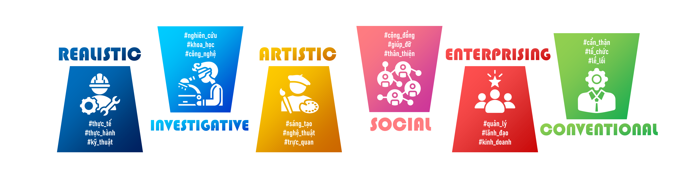

Bài test dựa trên lý thuyết "Holland codes".
Theo tiến sĩ Tâm lý học John L.Holland (1919 - 2008), con
người được chia ra thành 6 loại cá tính (
RIASEC - Holland codes ). Mỗi loại cá tính sẽ phù hợp với một số lĩnh vực nghề nghiệp.
Cụ thể như sau:

Cho đến hiện đại, Holland codes vẫn là bộ công cụ phổ biến được
dùng để khảo sát tính cách và hướng nghiệp trên thế giới và được
tin dùng bởi nhiều trường Đại học.
Xem cách trang web tính toán kết quả trắc nghiệm
tại đây.
Câu 1 - 42
Mỗi câu hỏi dưới đây là 1 công việc. Hãy đánh giá
mức độ yêu thích HOẶC tần suất
bạn hay làm những việc đó.
(hawaiipublicschools.org)
Câu 43 - 49
Mỗi câu hỏi dưới đây là 1 câu chuyện. Hãy đánh giá
mức độ tán thành
của bạn đối với những câu chuyện đó.
Chú ý: Những mẫu chuyện này không có chức năng tuyên truyền mà chỉ
có mục đích như đã nêu trên.
Câu 43
Bạn đạt điểm thấp trong bài thi và có dấu hiệu học tập xuống dốc.
Bạn thường làm gì tiếp theo?
Câu 44
Tòa nhà Capital Gate ở Abu Dhabi (Các tiểu vương quốc Ả Rập thống
nhất, UAE) là tòa nhà nghiêng nhất thế giới với chiều cao 160
m, nghiêng 18 độ, xây trên nền cát và thường xuyên chịu những cơn
bão cát khổng lồ.
Tại sao người Ả Rập có thể làm được điều đó?
Câu 45
Như ta đã biết:
$$ 0,3333\ldots \times 3 = 0,9999\ldots $$
Và ta cũng có:
$$ \frac{1}{3} \times 3 = 1 $$
Cho nên 0,9999… = 1. Tuy nhiên, một số người lại cho rằng 0,9999… ≈
1 chứ không thể = được.
Câu 46
Ma có thật không?
Câu 47
Năm 1985, Coca-Cola ra mắt New Coke, thay thế cho sản phẩm cũ
Classic Coke.
Công ty Coca-Cola đã tiến hành thí nghiệm với 200000 người và kết
luận rằng New Coke ngon hơn Pepsi - đối thủ truyền kiếp của
Coca-Cola. Dựa vào kết quả này, công ty đã loại bỏ hoàn toàn Classic
Coke và thay bằng New Coke. Coca-Cola cho rằng đây là một giải pháp
tốt để đẩy Pepsi ra khỏi thị trường.
Tuy nhiên, New Coke đã thất bại, người dùng không quen với loại thức
uống mới này, họ thích Classic Coke hơn. Vậy là, Coca-Cola phải quay
về Classic Coke cũ.
Câu 48
Vào ngày 16/5/2025, một hội thảo do 3 người tổ chức bao gồm:
Corrado Malanga, Tiến sĩ chuyên ngành Hóa học ứng dụng và Vật Lý
cơ bản.
Armando Mei, Tiến sĩ Lịch sử và nhà Ai Cập học.
Filippo Biondi, chuyên gia công nghệ SAR (nói rõ sau).
Tại buổi hội thảo, nhóm đã phát hiện tám giếng thẳng đứng sâu 648 m
và 2 không gian khổng lồ nằm sâu 700 m dưới nền 3 kim tự tháp, mở ra
nhiều nghi vấn về nguồn gốc và mục đích của các cấu trúc này, có thể
liên quan đến nền văn minh cổ đại vượt bậc. Nhóm do tiến sĩ Corrado
dẫn đầu còn phát hiện hệ thống không gian phức tạp trong kim tự tháp
Khafre, với năm cấu trúc tương tự phòng mộ, làm dấy lên thắc mắc mới
về chức năng thực sự của kim tự tháp Ai Cập.
Để thực hiện nghiên cứu này, nhóm các nhà khoa học đã phải sử dụng
một phương pháp mới để “nhìn” xuống bên dưới các kim tự tháp được
gọi là SAR. Họ bắn các xung radar từ hai vệ tinh trên quỹ đạo xuống
kim tự tháp và phân tích cách các tín hiệu phản xạ lại. Những tín
hiệu này được chuyển thành sóng âm để tạo ra hình ảnh 3D về các cấu
trúc ẩn dưới lòng đất.
Tuy nhiên, phát hiện trên vấp phải sự phản đối mạnh mẽ của các
chuyên gia khảo cổ, đặc biệt là tiến sĩ Zahi Hawass, cựu Bộ trưởng
Bộ Cổ vật Ai Cập, người cho rằng các kết quả này thiếu cơ sở khoa
học và có nhiều lỗi kỹ thuật. Cụ thể, trong hội thảo, nhóm nghiên
cứu đã nói rằng các kim tự tháp xây bằng đá granit thay vì đá vôi,
và các hình ảnh radar không tương thích với cấu trúc thực tế cho
thấy độ chính xác của công nghệ này không cao. Trên thực tế, Filippo
Biondi được cho là chỉ từng sử dụng SAR để quét các công trình nhỏ
lẻ thay vì một cấu trúc đồ sộ và vĩ đại như các kim tự tháp ở Giza.
Buổi hội thảo được tổ chức bằng tiếng Ý thay vì tiếng Anh; cùng với
một số lỗi khác cho thấy sự thiếu chuyên nghiệp của những “nhà khoa
học” này. Thậm chí, có người dùng Internet đã đưa ra một số bằng
chứng để bác bỏ học vị của những nhân vật trên.
Sau đó, nhóm đã đề nghị Chính phủ Ai Cập cho phép thực hiện các cuộc
khảo sát quy mô hơn. Tuy nhiên, cho đến nay, đề nghị này vẫn chưa
được hồi đáp.
(Thế giới cổ đại)
Câu 49
Vào ngày 11/3/2011, một trận động đất mạnh đến 9 độ richter đã xảy
ra ở ngoài khơi nhà máy điện hạt nhân Fukushima Daiichi. Khi đó, các
lò phản ứng số 1, 2 và 3 tại nhà máy vẫn đang hoạt động. Mặc dù hệ
thống cảnh báo sớm đã tự động dừng các lò phản ứng, nhưng các thanh
nhiên liệu vẫn tiếp tục sinh nhiệt. Các kỹ sư đã cố gắng kích hoạt
hệ thống làm mát khẩn cấp và vận hành bằng các máy phát điện diesel
tạm thời. Nhưng chỉ 45 phút sau, một cơn sóng thần cao hơn 14 m ập
vào, làm ngập nhà máy và phá hủy hệ thống điện.
Từ đó, những ngày đen tối bắt đầu. Hệ thống làm mát ngừng hoạt động,
nhiệt độ tăng cao khiến các thanh nhiên liệu nóng chảy, tạo ra khí
hydro tích tụ và gây ra hàng loạt vụ nổ tại các lò phản ứng số 1, 2
và 3. Trong cơn hỗn loạn ấy, 800 nhân viên được lệnh sơ tán, nhưng
khoảng 50 người - gồm kỹ sư, công nhân và quản lý - đã tình nguyện ở
lại chiến đấu với thảm họa. Họ được cả thế giới biết đến với cái tên
“Fukushima 50” - những người hùng thầm lặng, chấp nhận nguy hiểm
tính mạng để ngăn chặn thảm họa phóng xạ lan rộng.
Giám đốc nhà máy Masao Yoshida đã kiên quyết phớt lờ lệnh tạm dừng
bơm nước biển từ công ty quản lý TEPCO và tiếp tục chỉ đạo cấp nước
làm mát cho các lò phản ứng. Chính quyết định quả cảm ấy đã giúp
giảm nguy cơ tan chảy hoàn toàn các lõi hạt nhân. Mặc dù ba trong số
sáu lò phản ứng đã bị hư hỏng nặng, và lượng lớn phóng xạ bị rò rỉ
ra môi trường, nhưng điều tồi tệ nhất đã không xảy ra.
Sau thảm họa, nhiều người đã chỉ trích Chính phủ. Nhiều chuyên gia,
cả trong và ngoài nước, đã từng cảnh báo rằng nhà máy Fukushima
Daiichi không đủ khả năng chống chịu động đất hoặc sóng thần. Tuy
nhiên, Chính phủ lại bỏ qua những cảnh báo này. Họ để mặc TEPCO -
công ty điều hành nhà máy - tự đánh giá rủi ro. Nhà máy thiếu nguồn
cấp điện dự phòng có khả năng chống chịu sóng thần, và các thiết bị,
xe cứu hộ hay robot không thể tiếp cận kịp thời do địa hình và mức
độ nhiễm xạ cao.
(Trạm cuối)
Trình quản lý code
Để thuận tiện lưu trữ dữ liệu, trang web còn cung cấp tính
năng
"Tạo code". Code là một dãy ký tự mã hóa dữ liệu mà cậu
nhập vào web. cậu có thể lưu code này cho các lần dùng sau
hoặc chia sẻ cho cậu bè để khỏi nhập lại thông tin. Mặc định,
code này sẽ được tự động lưu tại trình duyệt web của cậu.